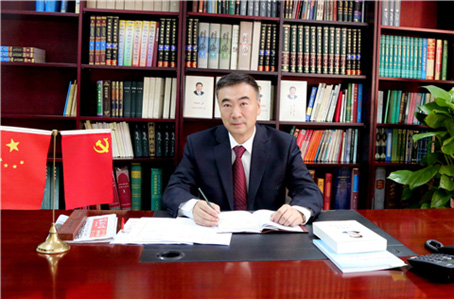

兰智奇 传递民族最美声音
来源：中华儿女报刊社

绿意掩映的北京市海淀区倒座庙1号院，是国家民委所属的中国民族语文翻译局办公地所在。这里静谧而深沉，大门口挂着的方方正正的淡银色单位名牌，低调内敛难得引人注目。1号院的当家人——翻译局党委书记兰智奇将这种“忽略”归结为这里的“静”，其实默默无闻的翻译局已经伴随共和国走过半个多世纪的波澜壮阔，将中央的声音及时、精准传达到少数民族地区。
“60年来，中国民族语文翻译局承担着党和国家重要的民族语文翻译任务。通过翻译工作，为党和国家服务、为少数民族和民族地区服务，在促进各民族交往、交流、交融的过程中发挥了桥梁和纽带作用，为民族团结进步事业作出了自己的贡献。这支队伍，是民族工作战线上一支重要而特殊的队伍。”微风轻拂，秋意盈动。接受采访时，兰智奇在办公室开门见山介绍翻译局的主要职能与定位。
往事并不如烟的红色记忆
轻轻翻开历史的相册，兰智奇娓娓道来一段珍贵的新中国少数民族记忆：“1949年9月，开国大典前夕中国人民政治协商会议第一届全体会议召开时，已有民族语文翻译人员的身影，但当时会议还没有成立专门的翻译机构。1954年9月，第一届全国人民代表大会第一次会议胜利召开并通过新中国第一部《宪法》时，首次在两会上设立民族语文翻译组，承担了大会文件的翻译和同声传译工作。时任国家民委常务副主任汪锋担任民族语文翻译组组长，赛福鼎•艾则孜、萨空了、平措汪杰任副组长。翻译人员将新中国第一部《宪法》、第一次政府工作报告翻译成蒙、藏、维、哈、朝等五种民族文字，很多少数民族群众第一次用自己的语言听到来自中央的声音。”
这些工作如同点点星火，发挥着重要的作用。随着任务逐步繁重，1955年9月24日，中华人民共和国民族事务委员会起草了《建立民族语文翻译机构的初步方案》，同年12月1日，时任全国人大常委会常务副秘书长张苏、时任国家民委常务副主任汪锋、时任国务院机关事务管理局局长刘墉如三人联名就建立民族语文翻译机构的问题报请时任国务院秘书长习仲勋，申请“关于建立民族语文翻译机构的问题”。习仲勋于12月6日在文件上批示：“拟同意在民委会成立翻译局，担任少数民族语文翻译工作。开始人数可少而精，后再培养，请总理核批。”
同年12月12日，周恩来总理明确批示：“同意。”这一天由此成为翻译局建局纪念日。
在新中国成立的大背景下，翻译局的成立也代表着国家对少数民族的尊重。兰智奇说：“《宪法》第4条明确规定：‘各民族都有使用和发展自己的语言文字的自由。’这就明确了国家和政府应该提供相应的条件、创造必要的机会，为少数民族营造学习满足语言文字的环境，所以翻译局的建立本身就体现了宪法精神。”
“几十年来，中国民族语文翻译局曾因工作的需要数次更名，翻译文种也从五种增加到蒙、藏、维、哈、朝、彝、壮七种，但翻译局一直坚持‘承担党和国家重要文件文献、法律法规和重大会议的民族语文翻译和同声传译工作，为党和国家及社会组织提供民族语文翻译服务；开展民族语文基础理论、翻译理论和有关特殊问题的研究，提出有关意见建议；开展民族语文新词术语规范化、标准化研究，提出民族语文新词术语标准建议；开展民族语文信息化研究，参与或承办民族语文信息化相关工作；联系民族语文翻译工作机构和民族语文翻译专家，承担民族语文翻译有关业务交流合作和业务培训工作’的重要职责。”讲起责任与任务，兰智奇格外严肃。他特意强调，翻译局从一开始建立，就主要是为全国党代会、全国两会等重大会议服务，为国家政权建设提供服务。
语及兴奋处，兰智奇起身走到书柜前，取出一套蒙古文、藏文、维吾尔文、哈萨克文、朝鲜文等五种民族文字版《习近平谈治国理政》，一一端正规整地摆到桌面上，“今年，我们局圆满完成五种民族文版《习近平谈治国理政》的翻译任务，这将更加方便少数民族群众深入学习贯彻习近平总书记系列重要讲话精神，在学习中增强国家认同感，汲取团结奋进的力量。包括领导人著作在内的党和国家重要文件文献、马列经典著作、国家法律法规的翻译，以及党和国家重大会议文件的翻译和同声传译，是翻译局两条工作主线。60年来，在关系到党和国家前途命运的重要历史瞬间，几代民族语文翻译和同声传译人员，能够亲身见证和参与，可谓任务特殊、责任重大。”
会议专门工作证背后的神圣使命
2015年全国两会期间，人民大会堂同声传译工作室鲜有地允许媒体进入采访，CCTV制作的一段新闻被广为转载。亮丽的民族服装、神秘的工作环境、紧张的同传节奏……仅有几分钟的短新闻，让全国两会民族语言同声传译人员第一次亮相公众面前，很多网友转发这段视频并惊叹他们“传递最美中国声音”！
那段时间，兰智奇也在微信朋友圈里给大家转发这段新闻。他说“其实这是我们工作的常态”，他只是为自己的队伍感到自豪。“为党和国家的重大会议提供民族语文翻译和同声传译工作，是翻译局的重要职能之一。历届全国人民代表大会、中国政治协商会议和历次中国共产党全国代表大会等重大会议，都少不了翻译局工作人员忙碌的身影。”
谈起全国两会同传这项翻译局每年重要任务，兰智奇似又回到紧张充实的工作状态中。作为全国两会民族语文翻译组组长，胸前挂着会议专门工作证的他责任重大。在全国两会期间大会发言时，兰智奇不是在主席台旁侧值班，就是上到大会堂四层同传室。“进入大会堂四层同传室的证件只有我们同传人员才有。”除了同传，在全国两会上，身穿节日盛装的少数民族代表和委员手捧散发着墨香的民族文版《政府工作报告》聚精会神阅读的场景，早已成为记者镜头的焦点。但是很多人并不知道，这份用少数民族文字翻译的报告，同样凝聚着中国民族语文翻译局工作人员的大量心血。
还有很多幕后故事放在兰智奇心里，比如“2015年春节来得较晚，距离全国两会召开时间近，翻译工作量又大，为保证完成任务，民族语文翻译组大年初四就已经开始在驻地进行翻译工作，由12个民族组成的近200名翻译人员中，大多数都是在合家欢聚的喜庆和爆竹声中踏上返京列车的”；再比如2014年3月5日十二届全国人大二次会议上，国务院总理李克强在作政府工作报告时，对昆明“3•01”严重暴恐事件“脱稿”进行了强烈谴责，“尽管没有现成的文稿，但上会之前，我们已经组织大家搜集相关材料，做了充分的准备。每个语种的三名同传人员都互相帮助，及时准确地将总理的讲话翻译出来。”
“两会”翻译虽然是常规系统工作，但每年特点不太一样。2015年政府工作报告篇幅大，出现了许多新词术语，涉及领域广泛，而“精准翻译”是民族语文翻译组对每位工作人员提出的严要求。兰智奇非常重视民族语文翻译组“质疑小组”的工作，“‘质疑小组’由具有多年全国两会工作经验的专家组成，主要针对大会翻译遇到的缩略词、专业术语及疑难问题进行推敲、解答。”
“工作人员驻地在郊区，离人民大会堂很远，大家起早贪黑地工作，有时候半夜还在备稿，真的很辛苦。”讲自己，兰智奇话不多，提起翻译人员他语含关怀与敬意。他讲起《习近平谈治国理政》的翻译工作：“基本上是跟两会重叠时间做的。工作量很大。翻译人员加班加点，两个多月完成了。”
每一项翻译任务，都关系到民族地区对党和国家政策的学习、理解与执行，也关系到民族地区各项事业的发展。兰智奇说：“不容懈怠。”2015年8月，第六次全国民族教育工作会议结束一周之后，翻译局已经将《国务院关于加快发展民族教育的决定》等会上产生的重要文件全部翻译完成。
建局60年来，除了正常工作，历年重大纪念活动的幕后，也有翻译局人员辛劳付出的身影。“翻译业务是我们所有工作的中心、焦点，重中之重的任务，我们始终坚持高标准、严要求，质量上做到精准无误、零差错，保密工作要万无一失、零泄密，纪律上遵规守纪、零事故，服务上精细优质、零指责，努力提供优质高效的翻译服务。”
尊重源自处于核心地位的特殊领域
2014年1月，兰智奇从中央民族歌舞团党委书记、团长的任上调往中国民族语文翻译局任党委书记。静谧，是他对翻译局最为深刻的第一印象。与聚光灯下、热闹喧腾的歌舞团相比，这里的一切静悄悄。兰智奇熟悉和喜爱这种安然于心的业务氛围。“那边风风火火，这里则非常静，过去是作为特殊单位不对外宣传的。我愉快地服从组织安排，是怀着认真负责的态度走马上任的。”他笑着回忆道。
从大学毕业的第一份工作起，30年来兰智奇历任中央民族大学团委秘书长，国家民委教育司普教处（综合处）、高教处、基础教育处处长和助理巡视员，国家民委文化宣传司副司长等职，一直跟民族教育、文化工作关系密切，怀有深厚感情。“我对翻译局比较熟悉，翻译局最早就由民委文化宣传司联系，而我恰恰在那里工作多年。我觉得自己在民族文化方面有一定基础和积累。来了之后召开第一次党委会，跟局里职工见面后，大家都觉得兰书记还比较专业，没说外行话。从事民族文化工作这么多年，我对民族文化比较了解，也很有感情。”
“民族文化对一个国家和民族来说是处于核心地位的特殊领域，包括价值观的形成，首先要有文化做背景，文化是一个民族发展的不竭动力。”兰智奇清楚翻译局工作的分量，在党和国家民族工作中具有不可替代的作用。在他看来，中国是多民族国家，这本身就是多样性的体现，不同民族文化丰富了中华文化。翻译局本身做语言文字工作，文化传承发展的载体就是语言、文字，如果这两样不存在了，各民族文化传播发展一定会受到制约和影响。“所以民族语文翻译工作很重要，这是不言而喻的。”
建立在国家建设与文化交流层面上的民族语文翻译，便不止于文字的互译、信息的传递。兰智奇讲道：“我们56个民族，在国家长期的历史发展形成过程中，也造就了多元一体的文化现象、特点，所以多元性、民俗性、稳定性、独特性和互涉性是民族文化的基本特征，民族团结进步事业关系着国家存亡、是与国家发展相一致的。”在多元文化背景下，各民族各具特点，又是相互影响和交融的，共同丰富了中华文化宝库，增强了中华文化的生命力、创造力，提高文化的内涵、认同感和向心力。
兰智奇曾在第二届新媒体与民族文化传播论坛开幕式的致辞中提出：“一个民族越是富有开放性，进取性，就越是经久不衰，丰富多彩，更具生命力、创造力和凝聚力。”这不论是从中国的历史经验看，或是国外的专家学者、各民族的发展历史，都验证了这一点。一个闭关自守的，不能与时俱进的民族本身是难以发展的。它的融合，消亡的过程也会相对短暂。因此，在面对世界范围内的文化竞争，面对全球化，一体化的过程当中，保持文化的多样性，发扬、继承、发展、保护、传承民族文化，具有现实意义。不过我们强调要尊重少数民族文化，不断推动少数民族文化向前发展，我们少数民族自身同样也要在保护、传承的同时主动发展。民族包容性也决定了民族发展的动力，和未来是否能跟其他民族同步向前发展。因此，要以保护繁荣文化为己任。
在摆满各种民族文字图书的书柜前，兰智奇欣喜地说起近年来几次国际书展期间，翻译局送出去一些少数民族语言文字图书受到瞩目的场景。“虽然外国朋友大多数看不懂，但是他们很关心、很关注，至少能够从书籍中感受到国家政府层面对少数民族语言文字的重视态度。如果我们能够在这方面发挥些作用，能在传播中华文化方面做些工作，还是很有意义的。能够把少数民族语言文字包括文化以这样一种形态传播出去，说明我们民族语文翻译工作还是受人尊重的。”
民族语文翻译之车搭上信息高速路
“近日，中国民族语文翻译局继成功研发多语种民汉双向智能翻译系统后，自主研发出了在手机上使用的维汉智能语音翻译软件。该软件采用维吾尔语语音合成和识别技术，依托中国民族语文翻译局海量的后台语料库，实现了维吾尔语和汉语的语音输入、语音朗读及维吾尔语与汉语的相互翻译功能。”2015年6月，寥寥数语的新闻宣告了翻译局在智能翻译方面的工作，已经从电脑转向移动终端。
“这意味着什么呢？”兰智奇在自己手机上打开软件演示起来，“比如我是维吾尔族，你是汉族，你讲一句汉语，手机上能够同步呈现维吾尔文字，并用维吾尔语朗读。现在安卓系统已经得到普及，ios系统也将在近期推出。”
提供维语在线免费翻译软件之后，翻译局收到的很多反馈让兰智奇既欣慰又惊讶。他给记者讲到，一位新疆维吾尔族化肥商人因为不会汉语，原来只能跟会维语的人做买卖，下载了软件之后，语言已经不是障碍，化肥销售量都提高了。于是“这个商人特意打来电话说‘非常好，谢谢了。’如果我们系统升级或检测暂时不能用时，就会有四面八方的用户打电话来问”。
传承与创新，是发展的永恒主题。在互联网时代，历史悠久的翻译局也跑上了信息快车道。“最近几年，我们依托自己几十年来积累的语料库，开展了蒙古、藏、维吾尔、哈萨克、朝鲜、彝、壮等7个文种的民族语文辅助翻译软件研发工作，取得了丰硕成果，并在近几年向有关省区赠送7个文种的电子词典和辅助翻译软件，能够进行整段在线翻译。好像说起来我们这样的单位基本上只是搞翻译，其实我们与时俱进的工作在开展，没有忽略这些。”
“现在已经进入信息化时代，如果少数民族语言文字这块不往前推进，那么整体工作效率、工作质量上都会有压力。”兰智奇不无自豪地说。原来参加全国两会和其他重大活动的翻译工作时，因为会场全是封闭式环境绝对不能与外界联系，更别提上网查资料，专家们要带好几本厚重的大词典到现场查询。现在大家只要带一台通过检测的保密笔记本电脑进去就可以了，大大方便了工作。现在中文和很多种外语都能在线实时翻译，少数民族语言文字也要跟上去。“我们在信息化建设方面做得不错，就是要把这些信息化的最新成果及早应用到实践中，推动全国民族语文翻译工作持续发展，更好地服务于各地的民族团结进步事业”。
静水流深一甲子。兰智奇感慨道，我们是民族工作战线上重要和有特殊作用的队伍。“60年来，我们形成了‘讲政治，顾大局，一丝不苟，甘于奉献’的优良作风和‘团结、紧张、严肃、活泼’的工作面貌，锤炼了一支能挑重担、能打硬仗的队伍，为少数民族和民族地区架设了一座沟通、交流的桥梁